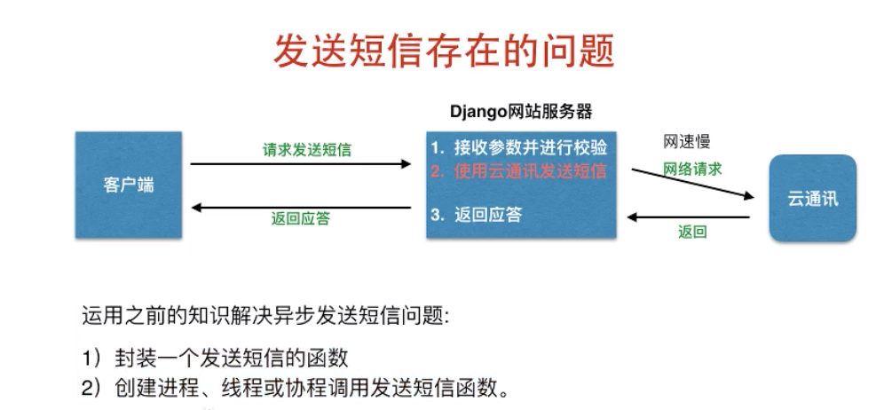
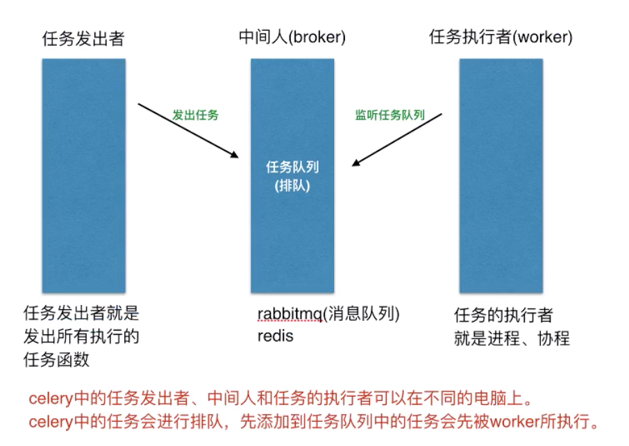
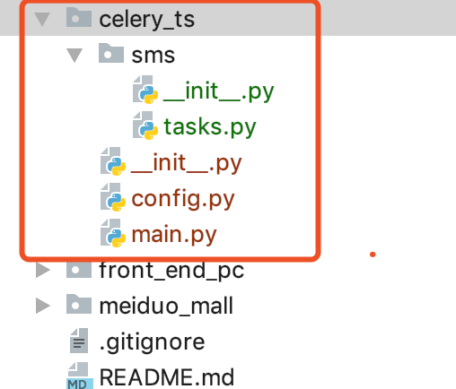
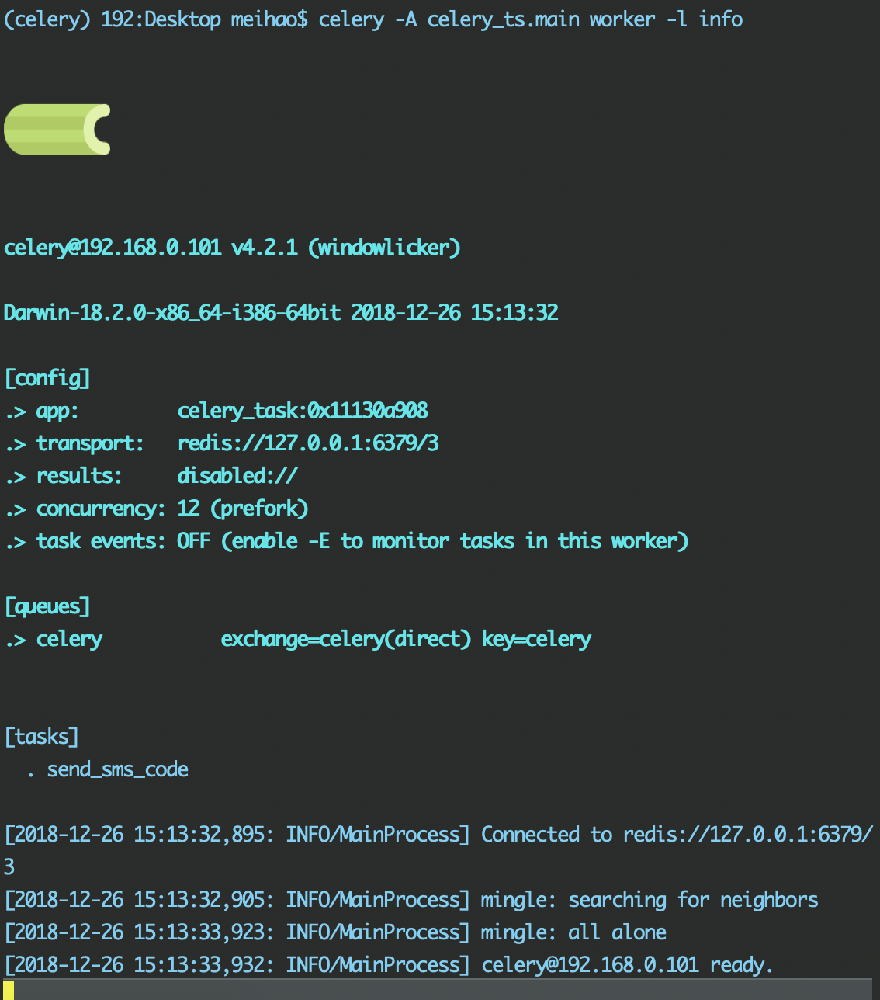
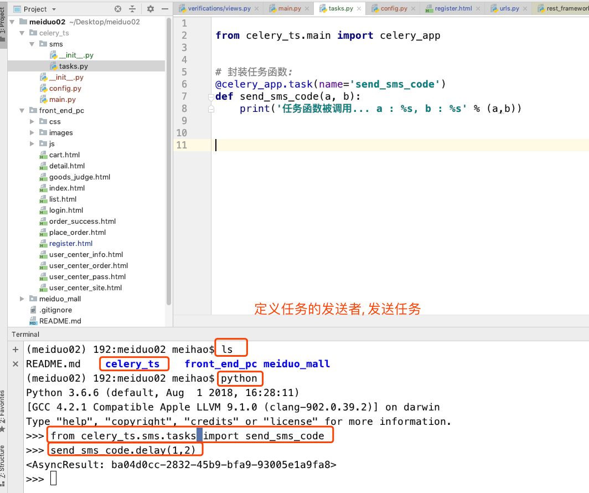
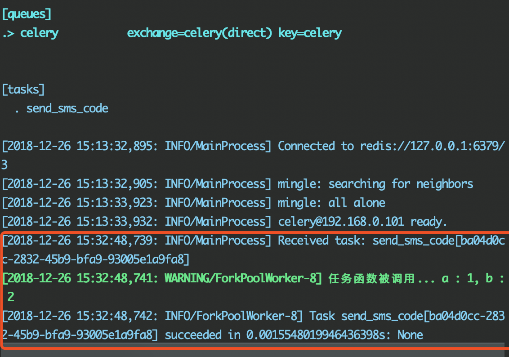
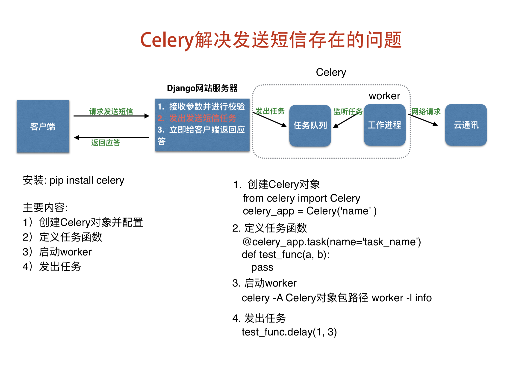

celery 导入
我们刚刚已经把短信的发送给完成了.但是还有些问题:

我们调用云通讯的时候, 可能会受网络的影响, 产生等待.
所以我们最好找一个线程或者协程帮助我们异步的完成这个操作.
Celery (异步任务队列)
celery 是 python 里面提供的包, 这个包叫做异步任务队列.可以用它实现异步任务.
学习目标:
- 使用 celery 异步完成任务
- 使用 celery 异步完成短信发送任务
作用:
- 使用 异步 的思想完成任务, 避免因延时等问题影响主线程任务的等待
基本概念:
Celery 有三个角色:
- 任务的发出者: 发出所有执行的任务(任务就是函数)
- 任务队列: ( 存放所要执行的任务信息)
- 处理者: 也就是工作的进程或协程, 负责监听任务队列, 发现任务便执行对应的任务函数
特点:
- 任务发送者和处理者可以分布在不同的电脑上, 通过中间人进行信息的交换.
- 任务队列中的任务会进行排序, 先添加的任务会被先执行.
图示:

安装
# 安装 celery:
pip install celery
使用:
创建 celery 对象并配置中间人地址
# 引入 from celery import Celery # 创建celery对象, # 参数一: 随意起的名称 例如这里的demo celery_app = Celery('demo')配置:
配置文件: broker_url = '中间人的地址' celery_app.config_from_object('配置文件路径')定义任务函数
任务函数, 就是我们需要执行的函数:
# 我们这里需要使用上面定义好的对象, 装饰任务 # 这里有个参数: name='当前任务的名称' 这里当前任务的名称可以随便起 @celery_app.task(name='my_task') def my_task(a, b): print('任务函数被执行') ...启动worker, 进行监听:
celery -A 'celery_app文件路径' worker -l infocelery: 只要我们装完这个包,就有这个命令
-A: -A指定了后面的celery_app文件的路径.
worker: 代表启动了工作
-l : 一旦工作起来就会启动日志, 使用这个参数指定日志的级别
info: 日志级别
发出任务
# 注意: 任务一定要调用 delay() 函数 my_task.delay(2, ,3)发出任务, 这里可以指定参数, 这里的参数代表任务的参数.
举例:
我们这里添加的代码和项目无关, 只是为了演示 Celery 的使用:
我们在项目外在创建一个新的包
起名为: celery_ts: (名称随意)

在这个包中, 添加两个文件:
main.py
# 导入 from celery import Celery # 为celery使用django配置文件进行设置 import os if not os.getenv('DJANGO_SETTINGS_MODULE'): os.environ['DJANGO_SETTINGS_MODULE'] = 'meiduo_mall.settings.dev' # 创建celery对象 # 名字随便起的: celery_task celery_app = Celery('celery_task')config.py
# 设置中间人broker地址: # 我们把信息保存在redis服务器的第三个存储空间中: broker_url = 'redis://127.0.0.1:6379/3'完成之后, 再次修改 main.py 文件, 添加如下代码:
# 将刚刚添加的配置信息, 加载配置到这里: celery_app.config_from_object('celery_ts.config')再添加一个包
起名为: sms. (名称随意)
里面添加一个 tasks.py 文件, 注意: 这个文件的名字必须是 tasks
在 tasks.py 文件中添加如下代码:
# 导入上面创建的 celery_app 对象 from celery_ts.main import celery_app # 封装任务函数: @celery_app.task(name='send_sms_code') def send_sms_code(a, b): print('任务函数被调用... a : %s, b : %s' % (a,b))添加 main.py 中的内容:
# 自动发现任务: # 在自动发现任务的时候, sms里面的任务名字必须是: tasks # 这是固定死的 celery_app.autodiscover_tasks(['celery_ts.sms'])
启动当前程序:
我们这里创建的是一个执行者:
我们可以在安装有 redis 和 celery 的虚拟环境下, 敲如下命令: celery -A celery_ts.main worker -l info效果如图:

我们可以从上图得知:
- app: 我们定义的app对象名,从这里可以看到
- transport: 中间人
- concurrency: worker, 执行者, 这里显示的是12. 这个数值和 cpu 有关.
- [tasks]: 启动之后发现的任务, 我们这里只有一个: send_sms_code
- 现在celery 已经连接到中间人了, 并且已经准备好.
创建任务发送者:

发出之后, 我们查看刚刚任务的执行者:

注意:
- 这里特别要注意一点: 调用任务( tasks )的时候, 我们需要用 任务名.delay( ) 来调用
$$ 信息提交: celery 的使用演示
使用Celery完成发送短信
我们使用 Celery 完成发短信的功能如图所示:

在 meiduo / meiduo_mall 下创建 celery_tasks
用于保存 celery 异步任务
在celery_tasks目录下创建config.py文件，用于保存celery的配置信息
# TODO 3.2 celery中config文件的配置 broker_url = "redis://127.0.0.1/14"在celery_tasks目录下创建main.py文件，用于作为celery的启动文件
# TODO 3.1 celery中main文件的添加 from celery import Celery # 为celery使用django配置文件进行设置 import os if not os.getenv('DJANGO_SETTINGS_MODULE'): os.environ['DJANGO_SETTINGS_MODULE'] = 'meiduo_mall.settings.dev' # 创建celery应用 celery_app = Celery('meiduo') # 导入celery配置 celery_app.config_from_object('celery_tasks.config') # 自动注册celery任务 celery_app.autodiscover_tasks(['celery_tasks.sms'])在celery_tasks目录下创建sms目录，用于放置发送短信的异步任务相关代码。
将提供的发送短信的云通讯SDK放到celery_tasks/sms/目录下。
在celery_tasks/sms/目录下创建tasks.py文件，用于保存发送短信的异步任务
# TODO 3.3 celery中任务的添加 import logging from celery_tasks.main import celery_app from .yuntongxun.sms import CCP logger = logging.getLogger("django") # 验证码短信模板 SMS_CODE_TEMP_ID = 1 @celery_app.task(name='send_sms_code') def send_sms_code(mobile, code, expires): """ 发送短信验证码 :param mobile: 手机号 :param code: 验证码 :param expires: 有效期 :return: None """ try: result = CCP().send_template_sms(mobile, [code, expires], SMS_CODE_TEMP_ID) except Exception as e: logger.error("发送验证码短信[异常][ mobile: %s, message: %s ]" % (mobile, e)) else: if result == 0: logger.info("发送验证码短信[正常][ mobile: %s ]" % mobile) else: logger.warning("发送验证码短信[失败][ mobile: %s ]" % mobile)
在verifications/views.py中改写SMSCodeView视图，使用celery异步任务发送短信
# TODO 3.4 调用封装好的函数, 注意这里调用的时候,需要加上 delay()
from celery_tasks.sms import tasks as sms_tasks
class SMSCodeView(APIView):
...
# 发送短信验证码
sms_code_expires = constants.SMS_CODE_REDIS_EXPIRES // 60
sms_tasks.send_sms_code.delay(mobile, sms_code, sms_code_expires)
return Response({"message": "OK"})